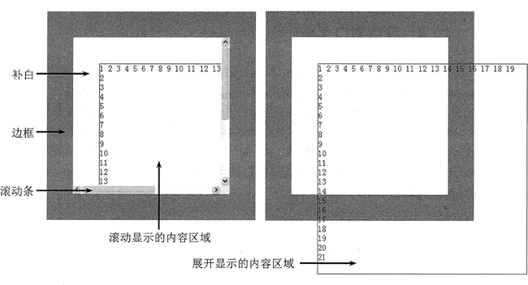
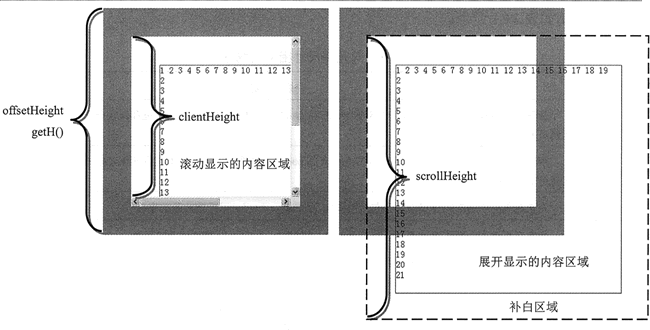

首页 > 编程笔记
JS获取元素的大小（高度和宽度）
在 JavaScript 中，使用下面 3 组属性可以获取元素的高度和宽度。如表所示。
offsetWidth 和 offsetHeight 是获取元素宽度和高度的最好方法，但是当元素隐藏显示时，即设置样式属性 display 的值为 none 时，offsetWidth 和 offsetHeight 属性返回值都为 0。
| 元素尺寸属性 | 说明 |
|---|---|
| clientWidth | 获取元素可视部分的宽度，即 CSS 的 width 和 padding 属性值之和，元素边框和滚动条不包括在内，也不包含任何可能的滚动区域 |
| clientHeight | 获取元素可视部分的高度，即 CSS 的 height 和 padding 属性值之和，元素边框和滚动条不包括在内，也不包含任何可能的滚动区域 |
| offsetWidth | 元素在页面中占据的宽度总和，包括 width、padding、border 以及滚动条的宽度 |
| offsetHeight | 元素在页面中占据的高度总和，包括 height、padding、border 以及滚动条的宽度 |
| scrollWidth | 当元素设置了 overflow:visible 样式属性时，元素的总宽度，也称滚动宽度。在默认状态下，如果该属性值大于 clientWidth 属性值，则元素会显示滚动条，以便能够翻阅被隐藏的区域 |
| scrollHeight | 当元素设置了 overflow:visible 样式属性时，元素的总高度，也称滚动高度。在默认状态下，如果该属性值大于 clientWidth 属性值，则元素会显示滚动条，以便能够翻阅被隐藏的区域 |
示例1
使用 offsetWidth 和 offsetHeight 属性获取元素的高度和宽度。
<div style="height:200px;width:200px;">
<div style="height:50%;width:50%;">
<div style="height:50%;width:50%;">
<div style="height:50%;width:50%;">
<div id="div" style="height:50%;width:50%;border-style:solid;"></div>
</div>
</div>
</div>
</div>
<script>
var div = document.getElementById("div");
var w = div.offsetWidth; // 返回元素的总宽度
var h = div.offsetHeight; // 返回元素的总高度
alert("div.offsetWidth =" + w);
alert("div.offsetHeight =" +w);
</script>
上面示例在怪异模式和标准模式的浏览器中解析结果差异很大，其中怪异模式解析返回宽度为 21 像素，高度为 21 像素；而在标准模式的浏览器中返回高度和宽度都为 19 像素。示例2
设计一个简单的盒子，盒子的 height 值为 200 像素，width 值为 200 像素，边框显示为 50 像素，补白区域定义为 50 像素。内部包含信息框，其宽度设置为 400 像素，高度也设置为 400 像素，即定义盒子的内容区域为（400px，400px）。
<div id="div" style="height:200px;width:200px;border:solid 50pxred;overflow:auto;padding:50px;">
<div id="info" style="height:400px;width:400px;border:solid 1px blue;"></div>
</div>
演示效果如下：

现在分别调用 offsetHeight、scrollHeight、clientHeight 属性，可以看到获取不同区域的高度和宽度。
var div = document.getElementById("div");
var hc = div.clientHeight; //可视内容高度为283像素
var ho = div.offsetHeight; //占据页面总高度为400像素
var hs = div.scrollHeight; //展开滚动内容总高度为452像素
演示效果如下：

查看 offsetHeight、scrollHeight、clientHeight 这 3 个属性的不同，具体说明如下：
- clientHeight = padding-top+height+border-buttom-width- 滚动条的宽度
- offsetHeight = border-top-width+padding-top+height+padding-buttom+border-buttom-width
- scrollHeight = padding-top+包含内容的完全高度+padding-bottom
offsetWidth 和 offsetHeight 是获取元素宽度和高度的最好方法，但是当元素隐藏显示时，即设置样式属性 display 的值为 none 时，offsetWidth 和 offsetHeight 属性返回值都为 0。
关注公众号「站长严长生」，在手机上阅读所有教程，随时随地都能学习。内含一款搜索神器，免费下载全网书籍和视频。

微信扫码关注公众号